Exercise 1: Git Deployment
Practical Record: From Git Installation to Team Website Deployment
Completion Time: April 2026
System: Windows
Step 1: Download and Install Git & Lingma
Instructions
First, you need to download the installation package suitable for Windows system from the official Git website.
- Open your browser and visit the Git official website: https://git-scm.com/
- Click the "Download for Windows" button

- After downloading, double-click to run the installer
- Follow the wizard prompts to install (recommended to use default settings)
- Open your browser and visit Lingma official website: https://lingma.aliyun.com/
- Click the "Personal Free Use" button
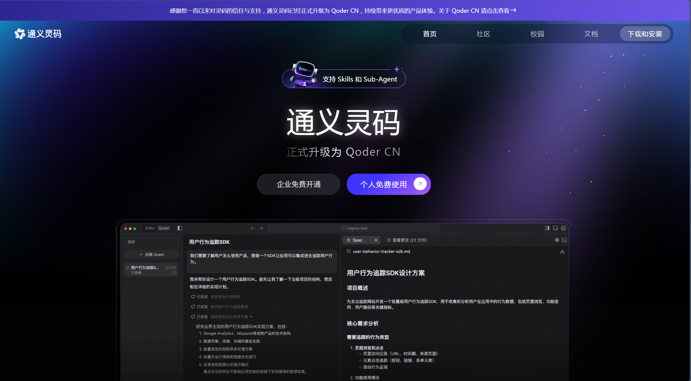
- This computer is Windows, so this example selects the Windows download button
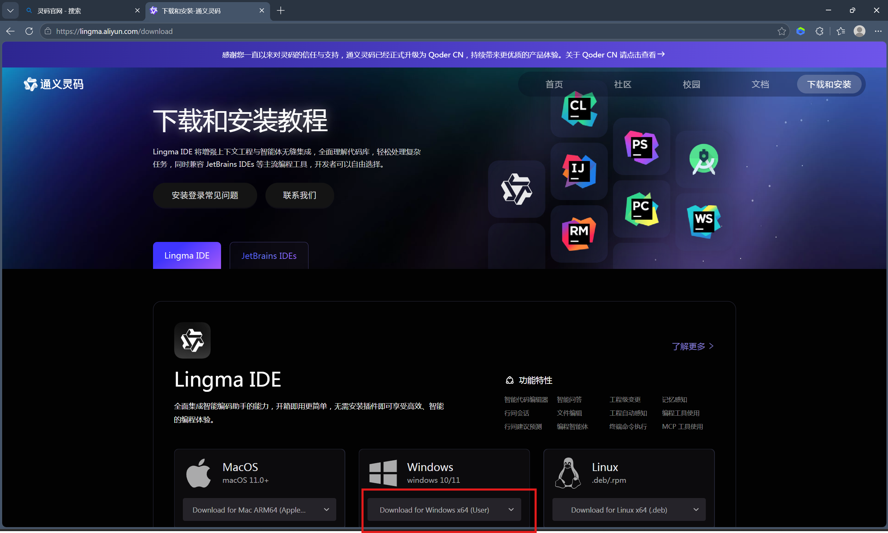
- After downloading, double-click to run the installer
- Follow the wizard prompts to install (recommended to use default settings)
Step 2: Create Repository on GitHub
Instructions
- Visit https://github.com/ and register an account (if you don't have one yet)

- After logging in, click the "+" sign in the upper right corner and select "New repository"
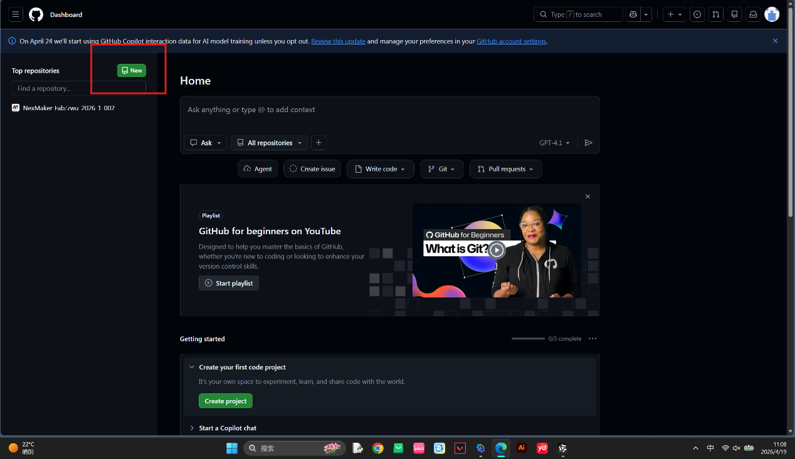
- Fill in repository information:
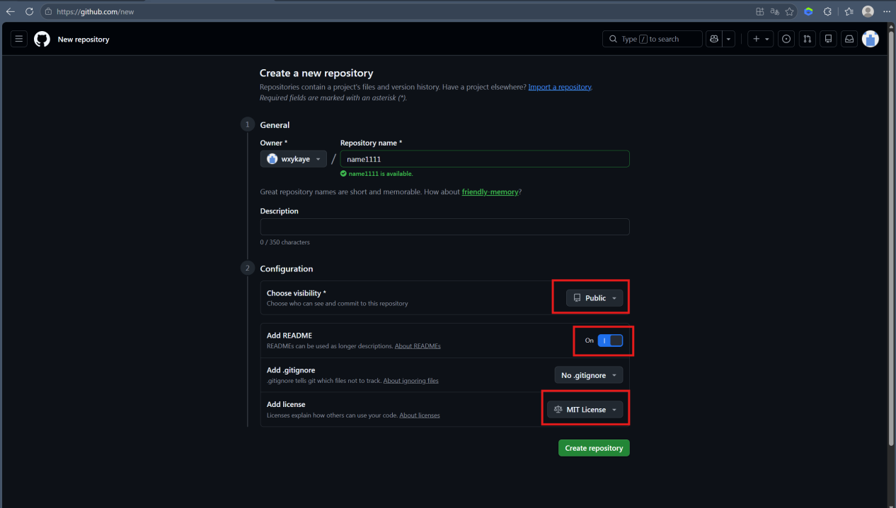
- Repository name: Enter repository name (the figure shows an example named name1111. In the assignment, we use zwu-2026-1-002 as our team repository name, and subsequent operations will also be in this repository.)
- Description: Optional, add repository description
- Public/Private: Choose public or private
- Add README: Select ON
- Add license: Select MIT License
- Click "Create repository" button
Step 3: Initialize Local Git Repository and Commit Code
Instructions
Initialize Git in the project folder and commit all files to the local repository.
# Enter project directory
cd "d:\Desktop\ZWU2026\Team"
# Initialize Git repository
git init
# Create .gitignore file
echo ".lingma/" > .gitignore
# Add all files to staging area
git add .
# Commit changes
git commit -m "Initial commit: LifeTeam website"Step 4: Enable GitHub Pages to Deploy Website
Instructions
- Visit your GitHub repository page
- Click the Settings tab at the top
- Find and click Pages in the left menu

- In the "Build and deployment" section:
- Source: Select "Deploy from a branch"
- Branch: Select "main"
- Folder: Select "/ (root)"
- Click Save button
- Wait 1-2 minutes, the website will be published
Access the Website
After successful deployment, your website can be accessed via the following address:

Step 5: Git Clone Remote Repository to Local (Recommended for Beginners)
Since we have already created an empty repository on GitHub, we can directly use the git clone command to download the repository to local, which will automatically complete the association without manually executing git remote add.
Operation Steps:
- Open the terminal in Lingma (in the top navigation bar - Terminal)
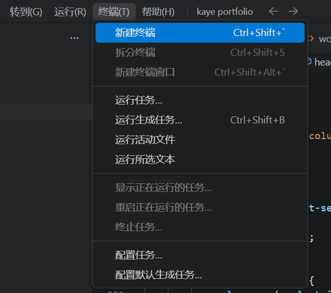
- Use git clone command to clone the remote repository (replace the repository address below with your own shell)
git clone https://github.com/NexMaker-Fab/zwu-2026-1-002.git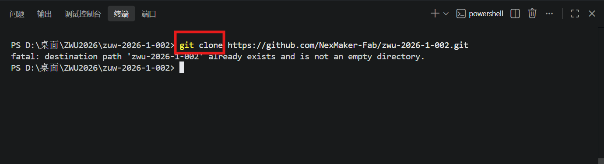
After execution, the terminal will show 100% progress, indicating successful cloning. If it shows like the figure above, it means it has been cloned before.
Step 6: Solve CSS Style Loading Problem
Problem Description
After uploading to GitHub Pages, found that the website's CSS styles did not load correctly, and the page displayed as pure HTML without any styles.
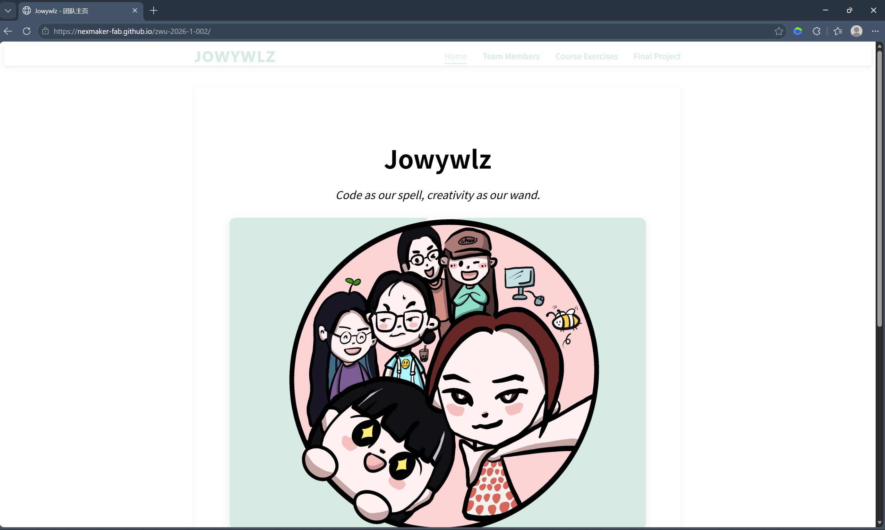
(Similar problem, the above figure is for illustration)
Problem: CSS File Error
Phenomenon: Press F12 to open developer tools, see style.css returning 404 error in Network tab.
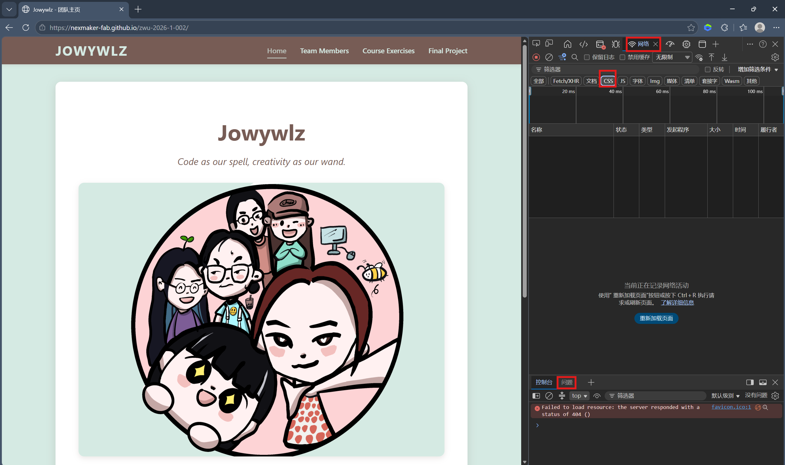
Reason: GitHub Pages URL contains subpath (/zwu-2026-1-002/), while HTML uses relative paths, causing the browser to fail to find CSS files.
Solution
Add <base> tag in the <head> section of all HTML files:
<head>
<meta charset="UTF-8">
<base href="/zwu-2026-1-002/">
<title>LifeTeam - Team Homepage</title>
<link rel="stylesheet" href="css/style.css">
</head>This way, all relative paths will automatically be based on the /zwu-2026-1-002/ base path.
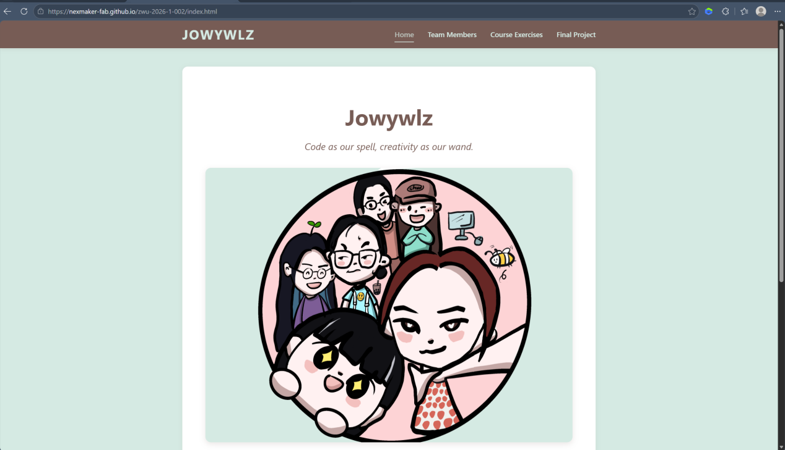
Step 7: Use Lingma AI Assistant to Create Team Website
Instructions
Use Lingma AI programming assistant to quickly generate team website code.
1. Describe Requirements:
Tell Lingma that you want to create a team showcase website, including:
- Team introduction
- Team member showcase
- Final project showcase
- Course practice records
Prompt:
我要做一个团队展示网站，团队名叫 Jowywlz，有6位成员。请帮我生成以下页面的完整HTML代码，要求所有页面风格统一、ins风、有导航栏可以互相跳转。
1. 首页（index.html）——团队介绍页
展示团队名称： Jowywlz
团队口号：以代码为咒，以创意为杖。
团队合照占位（用一张灰色占位图，尺寸800x400）
下方有一个"查看团队成员"的按钮，链接到团队成员列表页
2. 团队成员总览页（members/index.html）
用网格布局展示6位成员的头像（灰色圆形占位）、姓名、角色/职责
每位成员的头像和姓名可点击，跳转到各自的个人详情页
请用 member1.html、member2.html 这样的文件名，我会逐个补充内容
3. 成员个人页模板（members/member1.html 到 member6.html）
每个成员页面结构相同，包含：头像、姓名、角色、个人简介。因为6个人内容不同，请帮我生成一个通用模板，用注释标出哪些地方需要我手动替换内容
给我一份 member1.html 作为示例，告诉我如何复制修改成其他5位成员
4. 期末项目页（project.html）
展示"期末项目"的详细信息
包含：项目名称（占位）、项目简介、技术栈标签、项目截图占位、团队成员分工、项目进度
5. 课程练习页（exercises.html）
展示课程练习的列表
每个练习包含：练习名称、简短描述、一个"查看详情"占位按钮
先给我展示3个示例练习，我之后可以自己添加更多
6. 公共要求
所有页面顶部有统一的导航栏：首页、团队成员、期末项目、课程练习
导航栏要能高亮当前所在页面
所有页面底部加一个简单的版权信息
响应式设计，手机和电脑都能正常显示
请帮我生成所有需要的HTML文件和CSS样式，并告诉我文件应该怎么组织。2. Generate Code:
Lingma will automatically generate HTML, CSS, and JavaScript code
3. Save Files:
Save generated code to project folder
4. Test and Debug:
Open index.html in local browser to view effect


Prompt:
请帮我把导航栏颜色换成#71362B，把背景颜色换成#F1D28D，把导航栏字体颜色换成#1D28D，把剩下的（包括首页大的团队名和口号）颜色改为#950814，卡片边框颜色改为#950814，头像边框改为#950814You can try different color schemes by communicating directly with Lingma.
Our website's final color scheme:
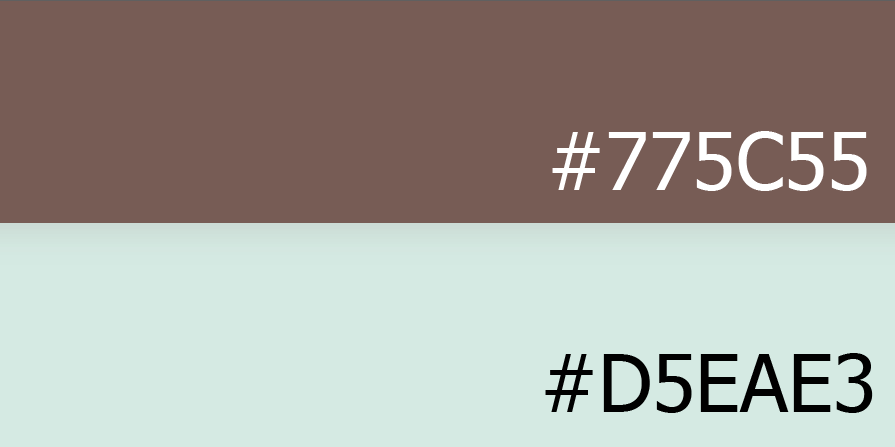
About Navigation Bar:
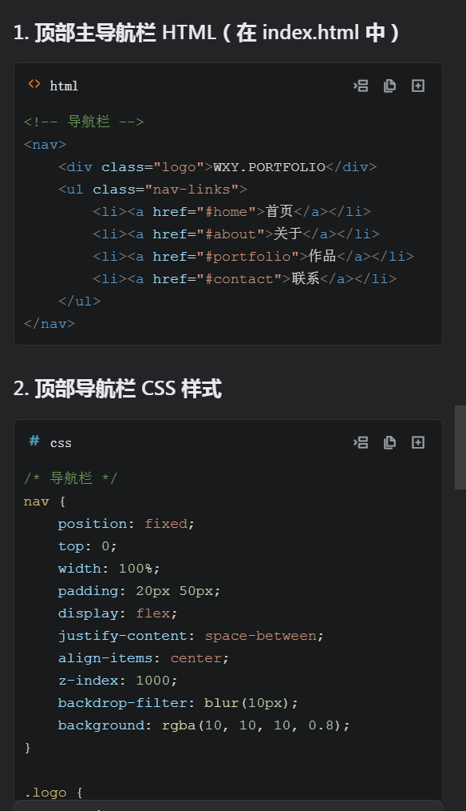
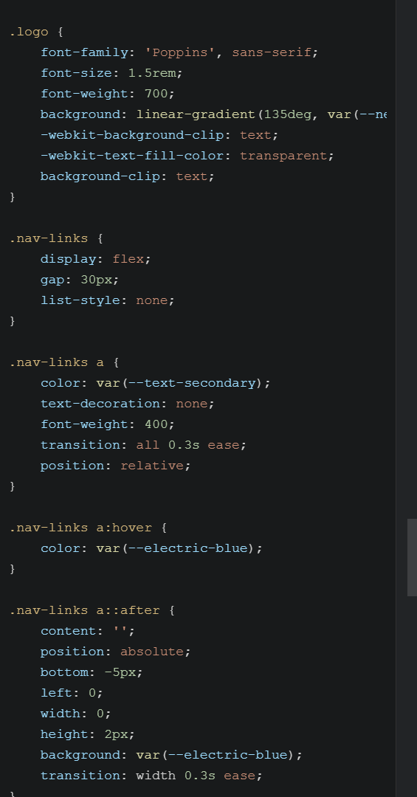
The navigation bar is usually divided into two parts: one HTML, one CSS style.
5. Iterative Optimization:
Adjust content and styles according to requirements
Usage Tips
- Describe your requirements in as much detail as possible, including functions, styles, layouts, such as adding images, etc.
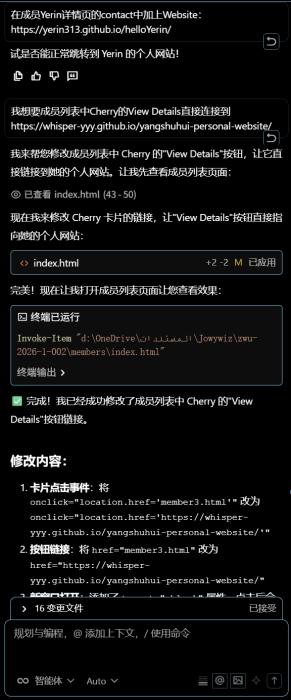
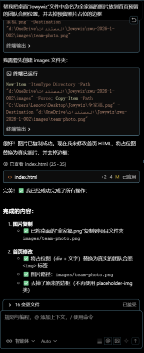
Prompt:
在成员Yerin详情页的contact中加上Website：https://yerin313.github.io/helloYerin/
帮我把桌面" Jowywiz"文件中命名为全家福的照片放到首页预留队合照位置，并去掉预留照片占位的边框- You can let Lingma generate code for different parts step by step
- When encountering problems, send error messages directly to Lingma, it will help you solve them, remember to select "Agent" mode
- You can let Lingma help you optimize code or add new features, including letting it help you upload the website to GitHub
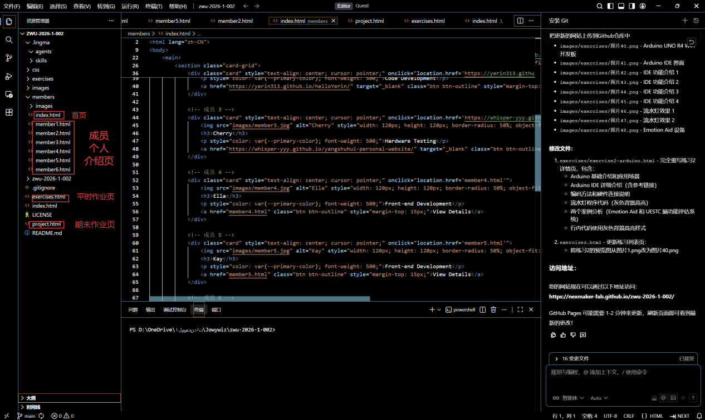
Step 8: Push Code to Cloud Repository
Prompt:
现在帮我把所有的代码等东西都推到仓库里，确保别人访问我的网页时能看到现在有的所有东西Note: Be sure to select Lingma's "Agent" to let it execute
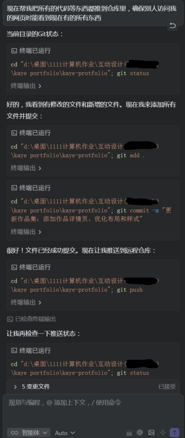
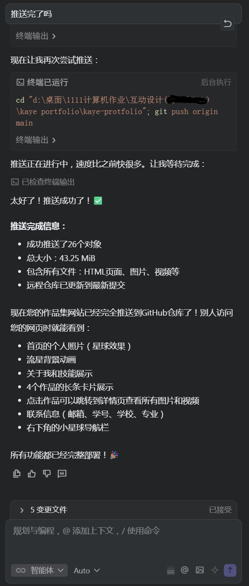
(The above figures are personal repository code push examples, not the zwu team repository)
When the feedback shown in Figure 2 appears, you can go check whether your code has been uploaded successfully.
Summary and Gains
Completed Work
- ✅ Successfully installed and configured Git
- ✅ Created repository on GitHub
- ✅ Uploaded local code to GitHub
- ✅ Enabled GitHub Pages to deploy website
- ✅ Solved CSS path problem
- ✅ Used Lingma AI assistant to create team website
Knowledge Learned
- Basic Git operations: init, add, commit, push
- GitHub repository creation and management
- GitHub Pages configuration and usage
- HTML/CSS path problem troubleshooting and solving
- How to use AI assistants to improve development efficiency
Next Steps
- Continue to improve team website content and functionality
- Explore backend development and database knowledge